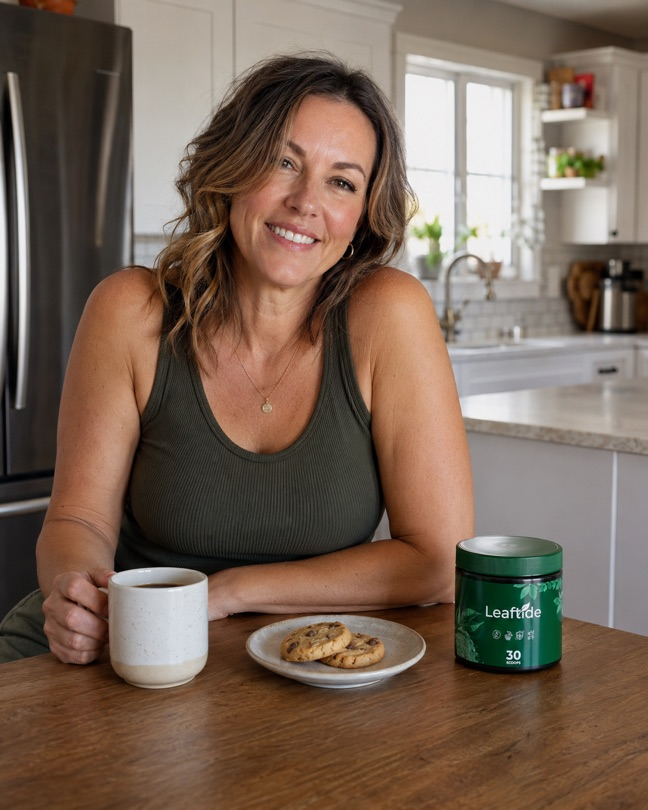

FREE GUIDE
Why the Scale Won't Budge No Matter What You Do After 45.
The 5-Minute Morning Ritual That's Finally Helping Women Let Go of Menopause Weight Gain.
"In my clinic, I see the same pattern in women over 45, week after week — and almost none of them were ever told why. This is the ritual I walk them through first."
— Dr. Hang
That stubborn weight that won't move no matter how strict the diet? It's not "lack of willpower," and it's not "just age." It's a signal: your metabolism is shifting into what I call the Metabolic Brake — the way your body starts holding onto more fat and water once estrogen drops, because it starts treating every calorie like it might be scarce. Almost nobody explains this to you, because there's no product to sell on top of something this simple. Everything on this page does ONE thing: helps your body ease off that brake, gradually. No magic formula, no starving yourself — four habits, a few minutes a day.
Why Everything You've Tried Has Failed
✗Cutting calories further. Your body reads it as real scarcity — and pulls the brake even tighter. You eat less, and the weight still won't move.
✗Excess cardio. It raises cortisol, and cortisol is exactly the hormone that drives fat storage around the waist at this stage.
✗"Just wait it out." Possibly the worst advice out there. This imbalance doesn't pass on its own — it settles in. Waiting is a decision too.
The 4 Habits
1
Morning Cinnamon & Lemon Water
5 minutes · right after waking, on an empty stomach
- Boil 500ml (about 2 cups) of water with 1 tsp of cinnamon and a pinch of salt for 10 minutes
- Let it cool slightly
- Squeeze in the juice of half a lemon while still warm
Why it works: starting the day with this combination helps you avoid the hunger spike that leads to snacking before lunch — the first nudge that helps take your body out of conservation mode before breakfast even happens.
2
Golden Turmeric Tea
5 minutes · 1 hour before bed
- Warm a cup of milk (dairy or plant-based) without letting it boil
- Stir in 1 tsp turmeric, a pinch of black pepper, and cinnamon to taste
- Whisk well and sip warm
Why it works: turmeric is traditionally used for its calming effect on low-grade inflammation, and black pepper helps your body absorb the curcumin better. Timed an hour before bed, it helps your body wind down — which matters for sleep too, another thing that gets disrupted during menopause.
3
Ginger & Lemon Tea
10 minutes · after your largest meal of the day
- Slice a piece of fresh ginger (about 1 inch)
- Steep in 300ml of hot water for 8-10 minutes
- Strain, add lemon juice, sweeten with honey if you like
Why it works: ginger is traditionally used to support digestion, and digestion tends to slow down during menopause. Taking it after your biggest meal helps your body process what you ate instead of carrying that bloated feeling all afternoon.
4
Cranberry Refresher
2 minutes · throughout the day
- Mix 100ml of pure, unsweetened cranberry juice with 400ml of water (still or sparkling)
- Add lemon slices and mint leaves
- Serve cold
Why it works: a lot of off-schedule hunger during menopause is actually thirst in disguise. Having a flavorful option that doesn't rely on soda or sugary juice makes it easier to stay hydrated — which alone cuts down on unnecessary snacking.
Why These Four Work Together
Estrogen drops
→
Metabolic Brake engages
→
4 habits keep things moving
Each recipe handles a different piece — blood sugar, inflammation, digestion, hydration — but the underlying job is the same: keep your body from fully locking into conservation mode. Tea, water, a morning habit, an evening habit: four different tools, one job. That's why it works even when "eat less, move more" hasn't.
Your Next 30 Days
Day 1: you start the day without that morning hunger spike. For a lot of women, that alone is a relief.
Week 1: the ritual becomes routine and stops taking up headspace — you just do it.
Week 3: fewer afternoon cravings, less bloating after meals.
Day 30: the routine is just part of your life now. More control over hunger, more consistency — and consistency is what sustains any real result long-term.
All of this will bring you relief.
But the definitive solution against menopause? I'm going to show you that right now.
Here's the part most people don't want to hear: the four habits above will help — but they will not finish the job on their own. They open the door. They do not hold it open. The moment life gets busy, travel happens, or you skip two nights in a row, the Metabolic Brake snaps right back. Free rituals create relief. They do not create structure. And without structure, your body goes back to storing fat and water like scarcity is coming. That gap is exactly where most women get stuck — and exactly where I stop letting patients leave my office with tea recipes alone.

"Since I started taking it every morning with my coffee, I don't think about it anymore — it's just part of my routine now." — Karen, Leaftide customer
If You Only Do the Free Protocol, You're Leaving the Hardest Part Unfixed
I'm going to be direct. The recipes work — when you actually make them, every single day, without fail. Most women don't. Not because they're lazy. Because they're busy. Because simmering turmeric at 10pm after a full day is not a sustainable system. Relief that depends on perfect memory is not relief. It's a temporary favor you're doing for a body that needs daily maintenance.
Your metabolism after 45 does not care about good intentions. It cares about what it receives, consistently. Miss the dose and the brake engages again. That is the gap the free protocol cannot close: same support, same dose, every morning — no boiling, no guessing, no "I'll do it tomorrow."
That is why I tell patients who are ready to stop spinning their wheels: take the four habits seriously and put one scoop of Leaftide in water every morning. Standardized turmeric, magnesium, and a B-complex — the same raw materials your body uses to hold that balance, delivered at a fixed dose so you stop relying on willpower to keep the system running.
This is not a miracle. It is not overnight. It is the difference between hoping your body cooperates… and giving it a daily reason to. If you're still waiting for "the right week" to get serious, you already know how the next 30 days end.
Get Leaftide Now →
One scoop a day · Start the structure today
Who This Is Not For
–If you're looking for an overnight miracle, close this page — there isn't one, and anyone promising you otherwise isn't being honest with you.
–If you won't even try the four free habits, none of this will help — they only work on the days you actually do them.
–If you'd rather keep masking the symptom than give your body real support, this will only frustrate you.
Two Paths Forward
PATH 1Close this page. Keep the free recipes as a nice idea. Tomorrow morning looks the same: bloating, hunger spikes, and another day of your body running the Metabolic Brake. You already know this ending.
PATH 2Start Leaftide today — one scoop every morning — while you run the four free habits. Habits handle the daily friction. Leaftide holds the structure so the brake doesn't slam shut the second life gets messy.
Same body. Same 30 days. One path keeps you stuck. The other builds the system.
Get Leaftide Now →
One scoop a day · Start the structure today
"Print this page if it helps. Do the four habits for seven days in a row before you judge whether they work. And if you have a question, leave it in the comments on any of my videos — I read every one."
— Dr. Hang